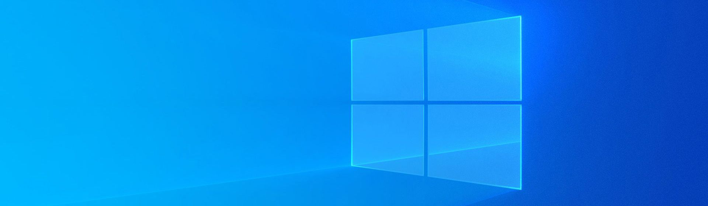

O Windows é um sistema operacional desenvolvido pela Microsoft e é amplamente utilizado em computadores pessoais em todo o mundo. Ele foi lançado pela primeira vez em 1985 e passou por várias versões desde então, incluindo o Windows 95, Windows 98, Windows XP, Windows Vista, Windows 7, Windows 8 e a mais recente, Windows 10.
O Windows oferece uma interface gráfica do usuário (GUI) baseada em janelas, que permite aos usuários executar várias tarefas simultaneamente. Ele é compatível com a maioria dos programas populares e oferece suporte a uma ampla variedade de hardware e dispositivos.
Algumas das características do Windows incluem a capacidade de personalizar a aparência e o layout da área de trabalho, o suporte a múltiplas contas de usuário, a capacidade de executar vários programas simultaneamente e a capacidade de conectar-se a redes locais e à Internet.
O Windows também oferece uma ampla gama de ferramentas e utilitários, como o Gerenciador de Tarefas, que permite aos usuários monitorar o desempenho do sistema, e o Painel de Controle, que permite aos usuários ajustar várias configurações do sistema.
Embora o Windows seja um sistema operacional popular, ele não é imune a problemas. Os usuários às vezes enfrentam problemas como lentidão do sistema, erros de software e problemas de segurança. No entanto, a Microsoft geralmente libera atualizações de segurança e correções de bugs para lidar com esses problemas.